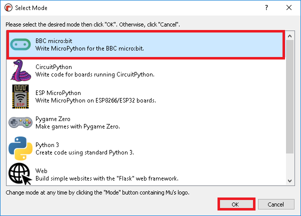

Увод¶
Микробит - да се подсетимо¶
Микробит је ручни, програмабилни микро-рачунар који је развијен првенствено како би заинтересовао децу за програмирање.
„Мозак” микробита је ARM процесор, а основну комуникацију са корисником омогућавају тастери и светлеће диоде који се налазе на уређају. Осим тога, микробит је опремљен и бројним сензорима који ће нам омогућити разне занимљиве примене овог микро-рачунара.
Екран
На предњој страни микробита налази се 25 лампица које су поређане у пет врста и пет колона. Ове лампице израђене су у такозваној LED технологији. LED je скраћеница од Light Emitting Diode, што у преводу значи диода која емитује светлост, светлећа диода. Расвета направљена овом технологијом, захваљујући дуготрајности и енергетској ефикасности, све више замењује халогену и флуоросцентну расвету у домаћинствима.
Тастери
Са леве и десне стране екрана налази се по један тастер. Тастери су означени словима A и B и користе се као улази. Микробит може да региструје који тастер је притиснут и да реагује на притисак неког од њих тако што ће извршити неку радњу или послати информацију неком другом уређају, зависно од тога како га програмирамо.
На полеђини микробита налази се још један тастер који омогућава поновно покретање (ресетовање) учитаног програма.
Компас
Микробит има уграђен и компас. Мoжемо да одредимо јачину магнетног поља у његовој близини, као и тренутну оријентацију уређаја у односу на стране света.
Акцелерометар
Акцелерометар нам омогућава да детектујемо различите типове покрета микробита. Можемо регистровати када га неко протресе, нагне, испусти. Овај сензор свакако може допринети да наши пројекти постану садржајнији и још интересантнији.
Сензор за температуру
Не постоји посебан сензор за температуру који је уграђен у микробит, али je oмогућено да користимо сензор који мери температуру његовог процесора. Температура коју показује микробит није потпуно прецизна, али можемо да региструјемо њене промене и направимо различите пројекте који користе те податке.
Пинови
На ивици микробита налази се 25 извода (пинова) - 5 великих и 20 малих. Пет великих (основних) пинова означени су са 0, 1, 2, 3V i GND. Пинови 0, 1 и 2 су улазно-излазни пинови опште намене. Преко њих, употребом проводника са крокодил-штипаљкама, можемо на микробит повезати разне додатне сензоре, али и управљати бројним уређајима. Пинови 3V i GND (ground - уземљење, маса) служе за напајање. Иако је обележен са 3V, на излазу овог пина добијамо напон од 3.3V у односу на масу.
Bluetooth
Микробит је опремљен и BLE (Bluetooth Low Energy) антеном пoмоћу које може бежично да комуницира са више других микробитова, рачунаром, мобилним телефоном или неким другим уређајем. Комуникација са другим уређајима је двосмерна, што значи да микробит може да прима податке са њих, али и да им прослеђује податке.
Микробит се најједноставније програмира преко уређивача блокова, али није много сложеније ни ако програмирамо у неком од правих, текстуалних програмских језика, попут ЈаваСкрипта или Пајтона.
Верзија Пајтона која се користи у раду са микробитом (и на неким другим, сличним платформама) се зове Микропајтон (MicroPython). Микропајтон је поједностављена верзија Пајтона, која не подржава баш све што постоји у стандардном Пајтону. На пример, у Микропајтону нећемо моћи да користимо наша слова и остале Unicode карактере или да форматирамо стрингове. Могуће је да ћете наићи на још понеко ограничење, али шансе за то су мале јер ћете имати на располагању све делове Пајтона који нама могу затребати.
Окружење у коме се микробит најједноставнијe програмира у Пајтону (тачније Микропајтону) је Mu (Мју). Иако ћемо ово окружење највише користити само као едитор за писање програма, оно у себи садржи и друге корисне могућности, које ћемо донекле упознати.
Инсталација Мју окружења за развој¶
Инсталацију Мју окружења можете пронаћи на адреси https://codewith.mu/en/download.
Изаберите oперативни систем који користите и преузмите инсталацију. Преузета датотека ће се вероватно наћи у фасцикли Downloads (преузимања). Пронађите је и покрените двокликом.
Прихватите услове лиценце као што је приказано на слици и изаберите предвиђене кориснике и одредиште за апликацију:
Инсталација Мју апликације је успешно завршена, спремни смо за рад!

Мју окружење¶
На самом почетку неопходно је да припремимо окружење за рад са микробитом. То ћемо урадити тако што ћемо кликнути на Mode у горњем левом углу и изабрати BBC micro:bit мод.
{kind=link}
Већ смо рекли да је окружење за рад веома једноставно и прегледно.
Главни мени састоји се из петнаест ставки:

Спремни смо да саставимо прве програмске линије!
Проверите знање¶
Питање 1: Колико се светлећих диода налази на предњој страни микробита?
- 30
- Одговор није тачан, покушајте поново!
- 36
- Одговор није тачан, покушајте поново!
- 24
- Одговор није тачан, покушајте поново!
- 25
- Тако је, на микробиту се налази 25 светлећих диода које су распоређене у пет врста и пет колона.
Питање 2: Који од наведених сензора микробит нема уграђен?
- сензор за температуру
- Одговор није тачан, на микробиту се налази овај сензор.
- магнетометар (за јачину магнетног поља)
- Одговор није тачан, на микробиту се налази овај сензор.
- сензор за притисак
- Тако је, на микробиту се не налази сензор за притисак, али је могуће повезати додатни сензор преко пинова.
- сензор за ниво осветљености
- Одговор није тачан, на микробиту се налази овај сензор.
Питање 3: Да ли је могуће бежично управљати микробитом?
- није могуће
- Одговор није тачан, покушајте поново!
- могуће је, микробит има уграђену Wi-Fi антену
- Одговор није тачан, покушајте поново!
- могуће је само ако имамо оптичку видљивост
- Одговор није тачан, покушајте поново!
- могуће је, микробит има уграђену BLE антену
- Тачно, више микробитова може да комуницира истовремено, а могућа је и комуникација са рачунаром, мобилним телефоном или неким другим уређајем преко Bluetooth-a
Питање 4: Ако желимо графички да прикажемо податке са неког сензора у реалном времену, користићемо
- Flash
- Одговор није тачан, покушајте поново!
- REPL
- Одговор није тачан, покушајте поново!
- Plotter
- Тако је, Plotter омогућава да графички прикажемо очитавања са сензора који се налазе на микробиту.
- Tidy
- Одговор није тачан, покушајте поново!
Питање 5: Дугме *Flash* служи да:
- избришемо садржај микробита
- Одговор није тачан, покушајте поново!
- проверимо да ли у програму има грешака
- Одговор није тачан, покушајте поново!
- сачувамо програм на рачунару
- Одговор није тачан, покушајте поново!
- учитамо програм у микробит
- Одговор је тачан, један од начина да учитамо програм у микробит јесте помоћу Flash дугмета.